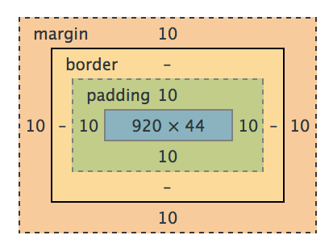
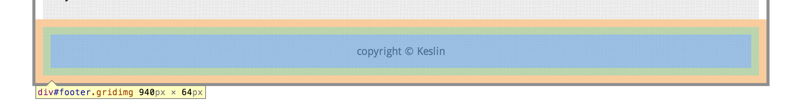
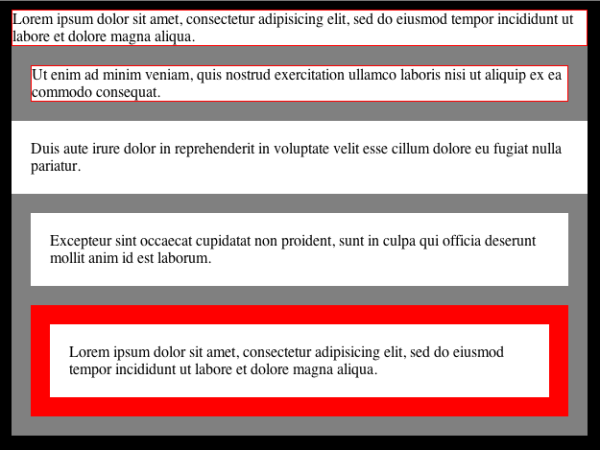

return jeffKeslin
margins, borders, and padding, oh my!
If you're like me, when you first had to use margins and padding in CSS you had one or all of the following questions pop into your mind:
Which one is inside the border? Aren't they the same thing? If I change one, does it affect the size of the other? Why can't I get some padding/margin above or below this element?Let's see if we can address some of these questions. Let's start with a visual...
This is how your Chrome Dev Tools will display the box model for an element that you've selected. Let's identify a couple important things. For this div, There's a content area of 920 x 44 pixels. There is padding of 10 pixels on the top, bottom, left, and right. And there are margins of 10px on each side. The border region (colored in yellowish) is left blank indicating that there is no border for this div. Let's see what this div actually looks like then.
This is an early version of the footer for this blog site. You'll notice it's color-coded just like our box model. The content area is in blue, the padding area in green is separating the content from the edge of the div, and the orange margin is separating the div from other outside elements.
Here's the important thing to remember:
Padding: Separates inner content from the borders of the div Margin: Separates the div from other elementsTime for a pop quiz. Take a look at the 5 divs in the image below. Take a second to identify which divs have margins and padding and which do not:
Hover your cursor below to reveal the answers...
1. No padding, no margins, 1px red border 2. No padding, 5px margins on all sides, 1px border 3. Padding of 5px on all sides, no left/right margin, no border4. Padding of 5px, margin of 5px, no border 5. Padding, margins, and borders all around!For more information on margins, borders, and padding and other fun stuff, click on the Resources link at the top of the page.
And happy coding!
these are a few of my favorite tech things...
FiveThirtyEight

In terms of content, FiveThirtyEight is like a dream come true. For the most part, it's a cross between my two favorite things: math and sports. And oh yeah, it's hosted by my intellectual hero, Nate Silver. I'm a big fan of Nate Silver's book, "The Signal and the Noise," and I've always dreamed of being able to get my news and sports updates from an author that loves charts and graphs as much as I do.
There's also something about the simplicity of the design and the way the information is organized on the page that I find comforting. The featured article is in plain sight at the top, the nav bar allows you search for an article of interest based on the topics (which are color coded) or you can search by the author with the sidebar on the right. The look is very clean and organized and simple, which I find appealing (I think you'll notice that as a theme when you see my next two choices).
After spending time on the site I feel a little anxious that I've just wasted so much time reading articles that I had no intention of reading, but the content is so rich with valuable information that it is not time spent that I regret.
Toothpaste For Dinner

Toothpaste for Dinner is a classic webcomic that's been around forever it feels like. Again, the simplicity of the site is appealing but also the simplicity and dryness of the content speaks to my strange sense of humor. The site has changed very little over the years which adds a nice nostalgic element to it.
The site has gotten a little messier with adverts all up and down the left side of the page and the social networking buttons appended to each cartoon. The extra material makes scrolling and navigating a little clunkier than it used to be, but the author has found new ways for you to search for archived material and randomly upload cartoons from the past years if you just can't get enough laughter.

I know what you're thinking, I ran out of ideas so I just picked the most recognizable website on the planet to save time. Not true! There's something magical about a company that has endless financial resources and technology (most of which it has created itself) and still has a homepage that has only 1 ugly logo and a search bar on a white background. Obviously Google has progressed to offering tons of services and products to people beyond its search algorithm, but it's still the only thing they allow to be their centerpiece when you visit, and all other items are hidden carefully at the top and bottom of the page. This kind of aesthetic is the opposite of sites like Yahoo! or CNN and is part of what makes it such a great company. I'll spare you the list of Google's products and services since we're all familiar with them and just end this paragraph with a tip of my cap to their always surprising and delightful Google doodles that I'm often treated to when I sit down at my desk at work and open my computer for the first time.
switching desks
I've been a high school Math teacher for 6 years now. It's the hardest thing I've ever done, but has also been the great joy of my life so far. I've met so many amazing kids and had an opportunity to share my love of math and science with any kid that'll listen.
Every group of kids I've taught in that six years has had a completely different character and mindset, which is why I bring this up. I often wonder at the end of a long school day things like, "Why is my 2nd period class so much more fun to teach than my first? Why are they learning more? Why does Eder work so hard even though he already has an A? Why is my 3rd period so quiet?"
The answer to all these questions is that culture matters. As a teacher I've seen a group of 30 kids who have a laundry list of struggles to worry about become energized and unified by the passion of a couple hard working students and acheive things that they could not have otherwise. This is what drew me to Dev Bootcamp. It feels like it was built by teachers. And by teachers I mean, people who have found a way to communicate their passions with a large group and create a sense of unity. When I read about dev bootcamp's curriculum or the structure of the classes or the emphasis on social learning (I'm terrified first of all) but I also feel like it was a program designed by lovers of teaching not just lovers of code.
Now I'm going back to being a student again and while I definitely have "imposter syndrome," as Shereef mentioned, I'm comforted by the fact that there's an emphasis on community and embracing our fears together.
I feel like Luke Skywalker when he picks up the lightsaber for the first time and doesn't really know what to do with it (and is at great risk of chopping his own arm off at any second). But he's on the verge of having access to a great power, if he's willing to put in the work and recognize his own weaknesses and turn them into strengths with the help of others.
I've had the pleasure of watching a handful of my students accept this challenge over the last few years, and they've inspired me to do the same. So I'm switching desks.
May the Force be with us all.